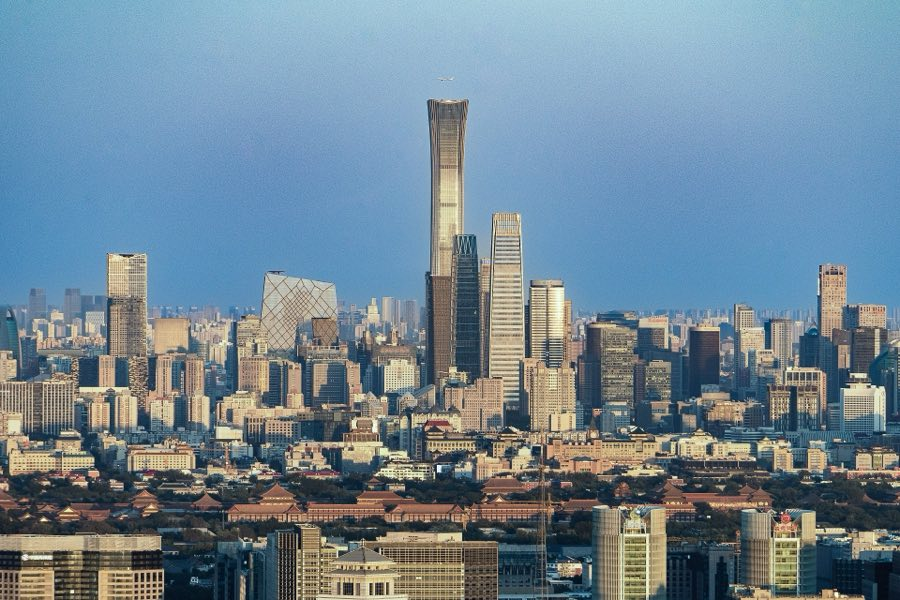

3days3giorni01BeijingPechino北京
North ChinaCina Settentrionale
as billed by the trip-buildercome indicato dal configuratore di viaggio: “The Great Wall”
Beijing, previously romanized as Peking, is the capital city of China. With more than 22 million residents, it is the world's most populous national capital city, as well as China's second-largest city by urban area, after Shanghai.…
Pechino, un tempo romanizzata come Peking, è la capitale della Cina. Con oltre 22 milioni di abitanti, è la capitale nazionale più popolosa al mondo e la seconda città cinese per area urbana, dopo Shanghai.…
It is located in Northern China, and is governed as a provincial-level direct-administered municipality with 16 municipal districts. Beijing is mostly surrounded by Hebei Province and neighbors Tianjin Municipality to the southeast; together, the three divisions form the Jing-Jin-Ji cluster.
Si trova nella Cina settentrionale ed è amministrata come municipalità a livello provinciale con 16 distretti municipali. Pechino è per lo più circondata dalla provincia dell'Hebei e confina con la municipalità di Tianjin a sud-est; insieme, le tre divisioni formano il cluster Jing-Jin-Ji.
Walk Mutianyu or Jinshanling instead of Badaling for far fewer crowds, then pair the Wall with the Forbidden City and a hutong alley walk.
Percorri Mutianyu o Jinshanling invece di Badaling per evitare la folla, poi abbina la Grande Muraglia alla Città Proibita e a una passeggiata negli hutong.